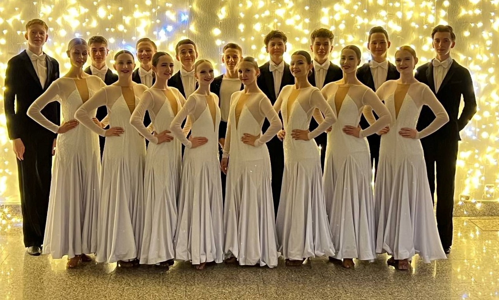
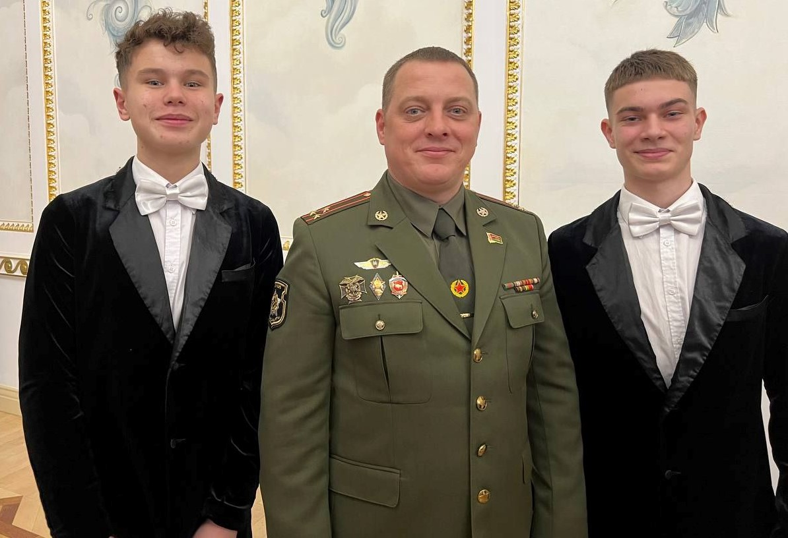
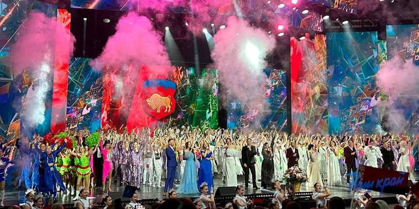
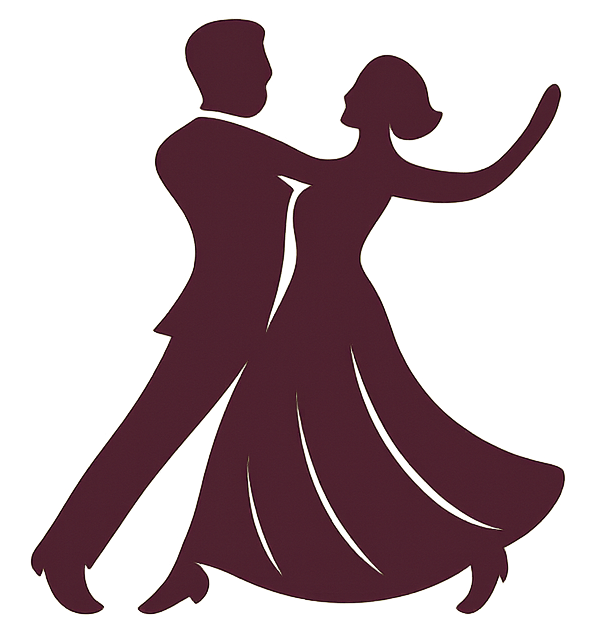

МИР БАЛЬНЫХ ТАНЦЕВ
Средневековье и Возрождение: первые светские балы появились во Франции и Италии. Танцы стали важной частью придворной культуры, где строго соблюдались правила этикета. Барокко и XVIII–XIX века: придворные танцы усложнились, появились павана, менуэт, полька и вальс. Танцы стали символом аристократического общества. XX век: бальные танцы вышли за пределы дворцов и стали доступны широким слоям населения. В 1924 году в Англии начали стандартизировать движения, а в 1936 году прошёл первый чемпионат мира среди любителей. Современность: сегодня существует две программы — европейская (стандарт) и латиноамериканская. В официальных соревнованиях исполняют 10 танцев: от вальса и танго до самбы и ча-ча-ча.
Бальные танцы делятся на две программы: европейскую и латиноамериканскую. Европейская включает вальс, танго, фокстрот, квикстеп. Латиноамериканская — самба, ча-ча-ча, румба, джайв, пасодобль. Это сочетание спорта, искусства и культуры, популярное во всём мире.
Костюмы для бальных танцев делятся на два типа: Стандарт — длинные платья у женщин, фрак у мужчин. Всё строго и элегантно. Латина — яркие, короткие наряды с блестками, открытой спиной и выразительными деталями. Одежда подчёркивает стиль танца и помогает выразить образ.
Подарок от брестской области губернатору